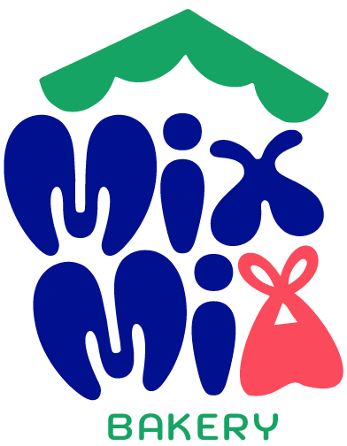
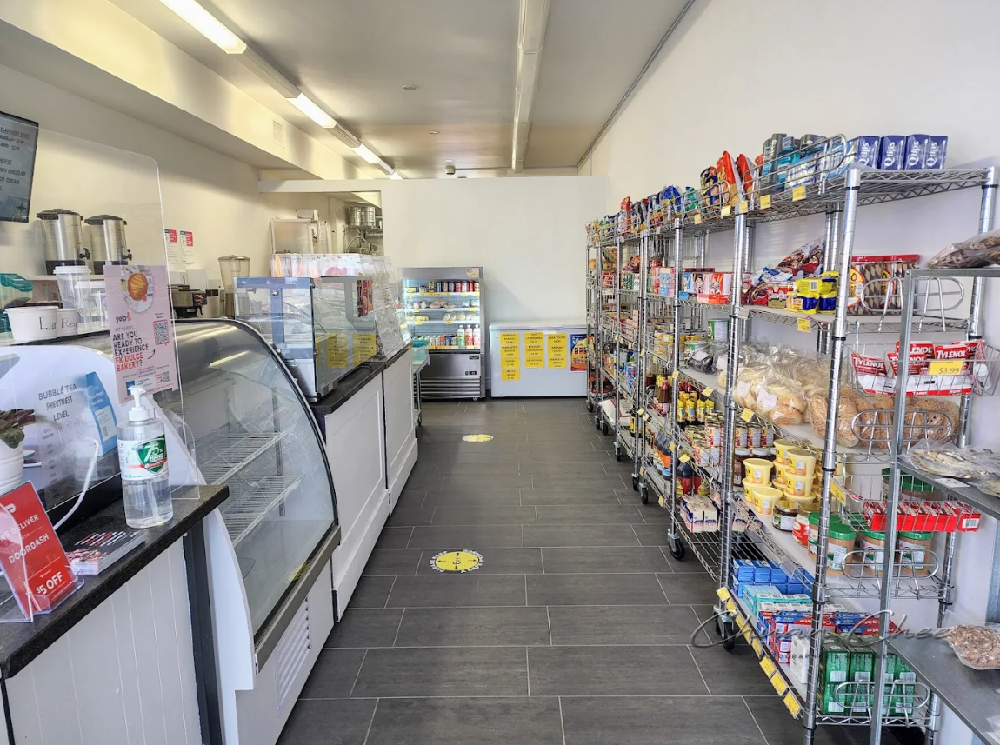
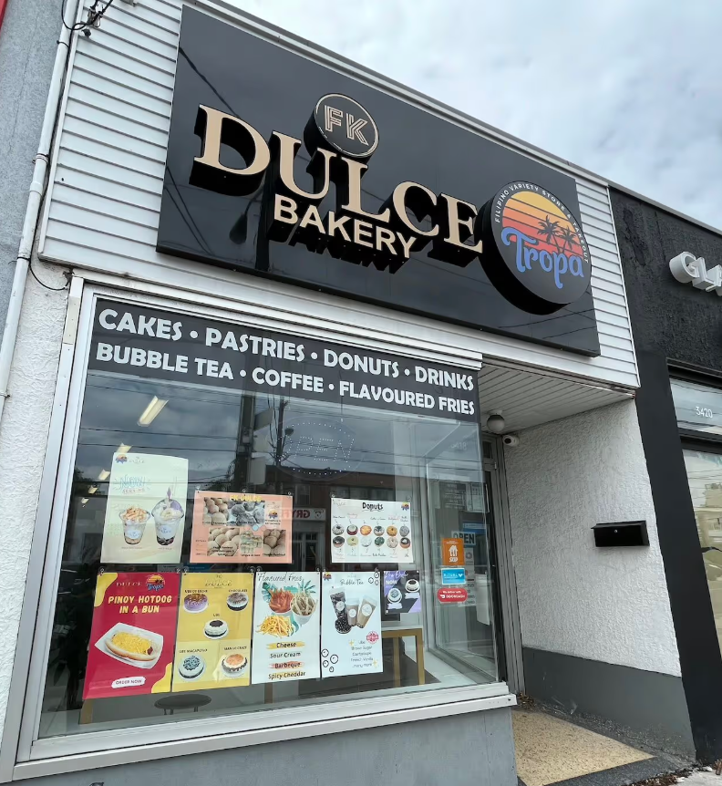
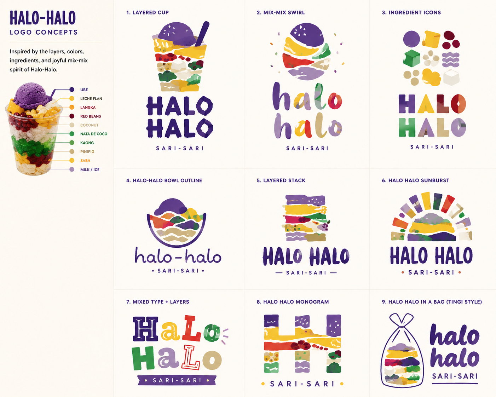
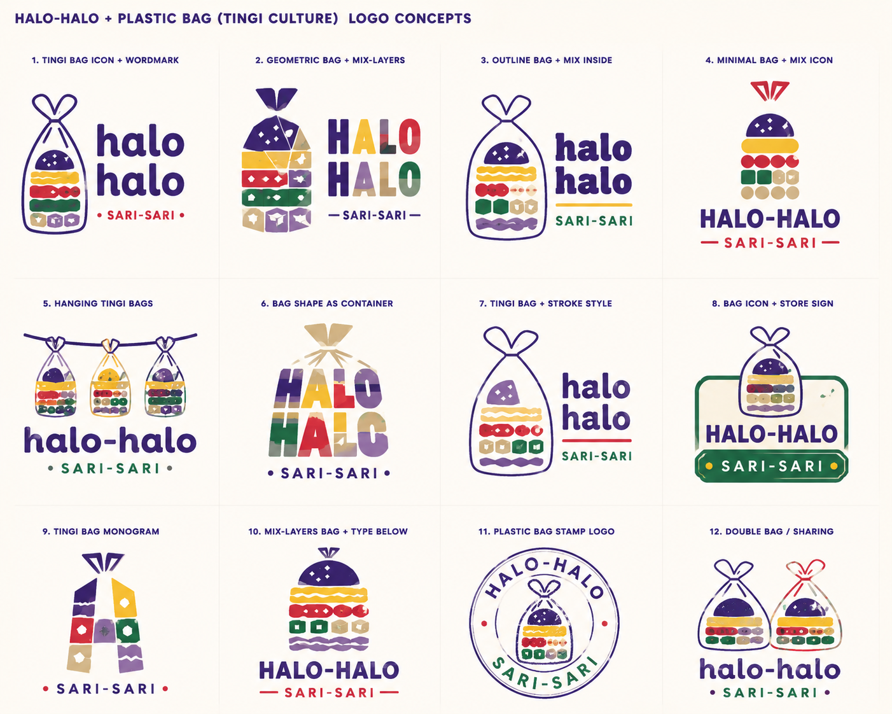
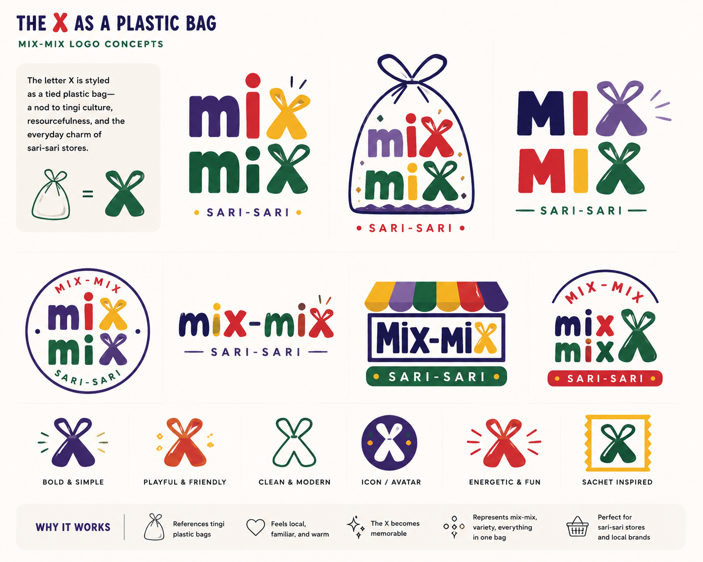
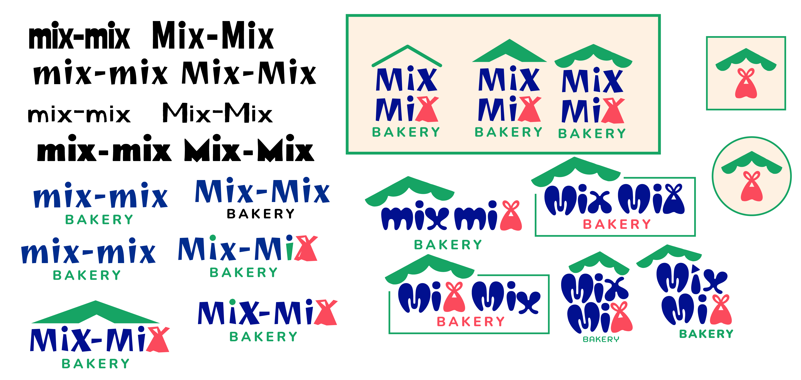
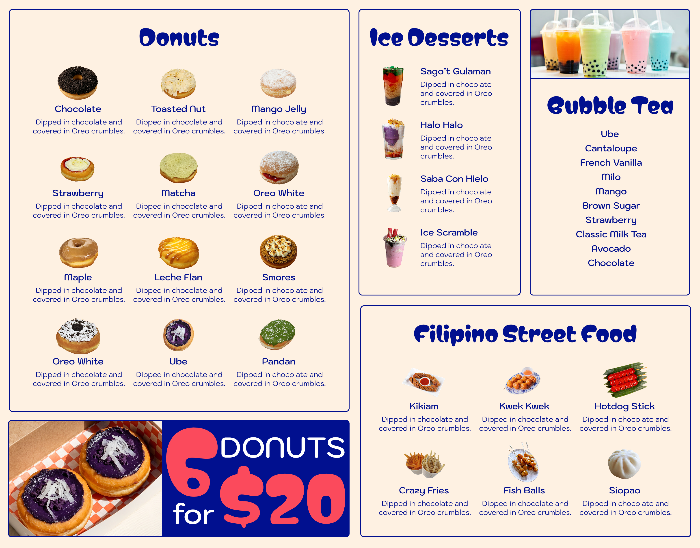

FK Dulce Bakery
(Brand Re-Design)
( ADOBE FIREFLY / ADOBE ILLUSTRATOR / FIGMA)

Renamed "FK Dulce" to "Mix Mix".
I redesigned FK Dulce Bakery’s branding to better represent the bakery’s Filipino-Western fusion identity and neighborhood-inspired atmosphere. Drawing inspiration from sari-sari store culture, tingi traditions, and handcrafted Filipino comfort food.
My Tools and Languages
- ChatGPT
- Adobe Firefly
- Adobe Illustrator
- Figma
Research
Based on my research of the bakery’s menu and social media, it seemed that the brand aimed to feel playful, casual, and nostalgic. The bakery offers unique and unconventional items such as flan-filled donuts, bright red Filipino-style hot dogs, and “crazy fries.”
One of the most interesting aspects of the bakery is that it also operates a sari-sari store, a small neighbourhood convenience shop commonly found in the Philippines, similar to a bodega.

FK Dulce's interior
Current Brand Issues
- Does not clearly communicate Filipino fusion identity.
- Lacks consistent styling.
- Target audience is unclear.
- Not visually appealing enough for social media sharing.

FK Dulce Bakery's Store Front
Process: AI for Ideation
To support ideation, I utilized AI (ChatGPT) by discussing various concepts, symbolism, and generating logos. From the beginning, I knew I wanted the brand to different filipino elements: halo-halo, sari sari stores, and tingi culture.



Design Approach
After gathering inspiration and exploring ideas with AI, I developed and refined my favourite concepts in Adobe Illustrator. I wanted the brand to subtly reference Filipino culture through elements such as sari-sari stores, tingi culture, and halo-halo without relying on overly literal visuals.
I felt “Mix Mix” was a stronger name to represent the bakery’s fusion-inspired menu and playful brand identity. The name also serves as a direct English translation of the Filipino dessert halo-halo.
But instead of using the full range of traditional halo-halo colours, I selected a smaller, more refined palette to create a playful yet more mature and modern aesthetic. During the logo exploration process, I also noticed that the “X” resembled the shape of a plastic bag, which subtly connected back to the symbolism of tingi culture.

Logo exploration on Adobe Illustrator
Final Rebrand Design
Due to the limited two-day timeline, I focused on developing the core brand assets, including the logo, website, and menu design.
Logo

Website

Print Menu